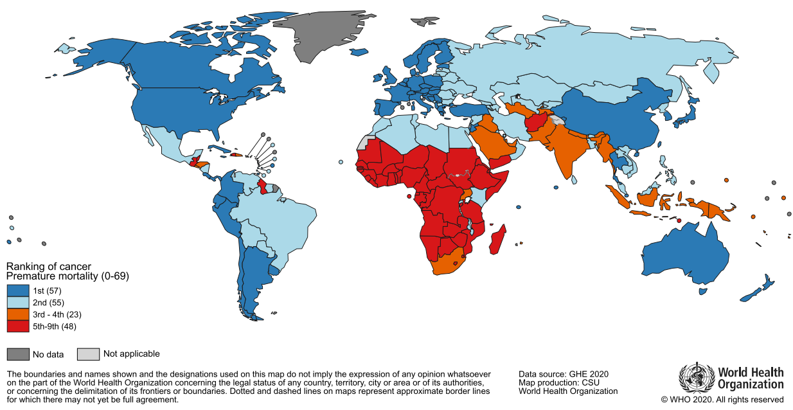
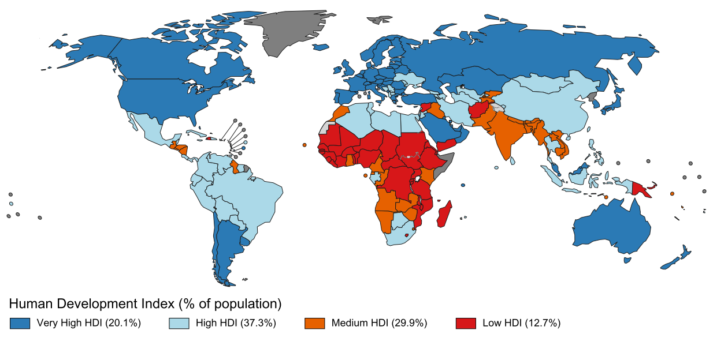
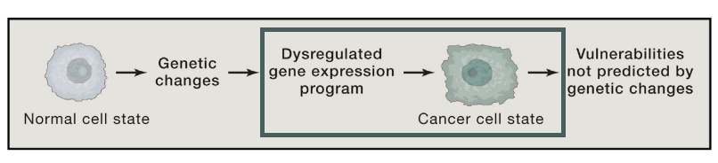
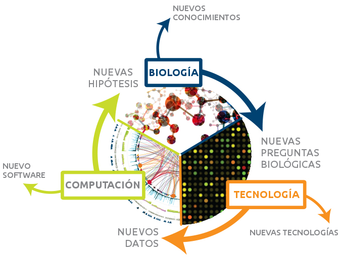
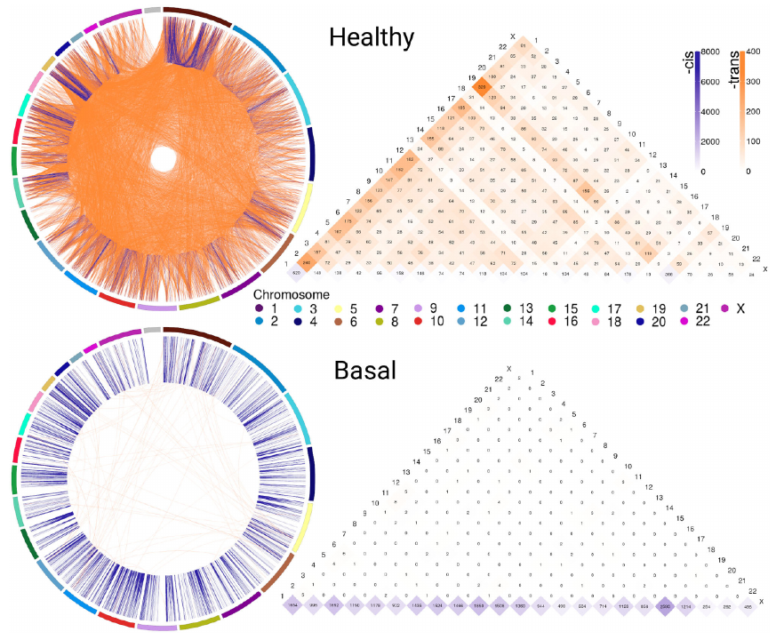
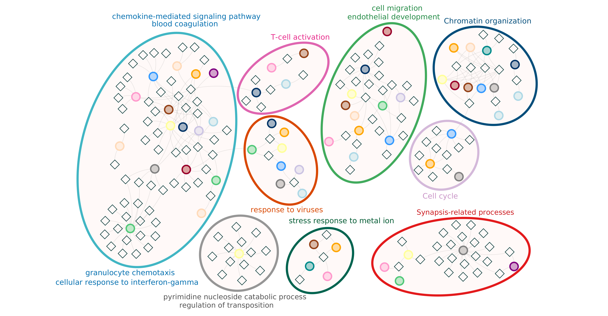

El cáncer es un problema de salud mundial

El cáncer es un problema de salud mundial

El cáncer es un problema de salud mundial
Transición epidemiológica
El cáncer es un problema de salud en México
El desarrollo de un tumor está dirigido por versiones desreguladas del programa transcripcional
operando dentro de las células de cáncer
Signos distintivos del cáncer
Aunque es un proceso multifacético y heterogéneo, existen características
comunes en el desarrollo de tumores
 Hanahan and Weinberg.Hallmarks of cancer: the next generation. .
Cell, 2011.
Hanahan and Weinberg.Hallmarks of cancer: the next generation. .
Cell, 2011.
El desarrollo de un tumor está dirigido por versiones desreguladas del programa transcripcional
operando dentro de las células de cáncer

Bradner JE, et al. Transcriptional addiction in cancer.
Cell, 2017.
Nos enfocamos en el transcriptoma porque:
-
Es el resultado medible de muchos mecanismos regulatorios.
-
Está asociado con la estructura y función celular.
-
Puede ser comparado entre diferentes fenotipos.
-
Existen datos públicamente disponibles, como TCGA.
Biología de sistemas

Es un enfoque multidisciplinario y colaborativo que utiliza herramientas computacionales y matemáticas para
para analizar y modelar sistemas biológicos.
Institute for Systems Biology. What is Systems Biology
Nuestro enfoque: Ciencia de redes
Las redes son un marco conceptual intuitivo para modelar componentes que provienen de datos de tecnologías ómicas.
 Sonawane AR, et al. Network medicine in the age of biomedical big data.
Frontiers in Genetics, 2019
Sonawane AR, et al. Network medicine in the age of biomedical big data.
Frontiers in Genetics, 2019
Nuestro enfoque: Ciencia de redes
Las redes son un marco conceptual intuitivo para modelar componentes que provienen de datos de tecnologías ómicas.
 Sonawane AR, et al. Network medicine in the age of biomedical big data.
Frontiers in Genetics, 2019
Sonawane AR, et al. Network medicine in the age of biomedical big data.
Frontiers in Genetics, 2019
De una matriz de expresión a una
red de co-expresión

De una matriz de expresión a una
red de co-expresión

De una matriz de expresión a una
red de co-expresión

De una matriz de expresión a una
red de co-expresión

Estudiamos relaciones de alta co-expresión
entre pares de genes porque:
-
Los genes pueden compartir mecanismos regulatorios.
-
Los genes pueden compartir algunas características funcionales.
-
Sin embargo, estas relaciones no representan (necesariamente) interacciones físicas o regulatorias.
Utilizamos redes porque:
- Podemos estudiar conjuntos de genes conectados.
- Podemos enfocarnos en las interacciones.
- Podemos analizar patrones globales.

Analizando patrones globales
Identificar comunidades en la red:
conjuntos de nodos que están más densamente conectados entre ellos que con el resto de la red.

Analizando patrones globales
Identificar comunidades en la red:
conjuntos de nodos que están más densamente conectados entre ellos que con el resto de la red.

Analizando patrones globales
Identificar comunidades en la red:
conjuntos de nodos que están más densamente conectados entre ellos que con el resto de la red.

Analizando patrones globales
Asociar comunidades de la red con procesos biológicos

En cáncer de mama
 11,675 interacciones (top 0.01% IM). Muestras: 110 normal, 780 cáncer.
Espinal-Enríquez J, et al.
RNA-Seq based genome-wide analysis reveals loss of inter-chromosomal regulation in breast cancer. Scientific Reports, 2017
11,675 interacciones (top 0.01% IM). Muestras: 110 normal, 780 cáncer.
Espinal-Enríquez J, et al.
RNA-Seq based genome-wide analysis reveals loss of inter-chromosomal regulation in breast cancer. Scientific Reports, 2017
En cáncer de mama
 11,675 interacciones (top 0.01% IM). Muestras: 110 normal, 780 cáncer.
Espinal-Enríquez J, et al.
RNA-Seq based genome-wide analysis reveals loss of inter-chromosomal regulation in breast cancer.
Scientific Reports, 2017
11,675 interacciones (top 0.01% IM). Muestras: 110 normal, 780 cáncer.
Espinal-Enríquez J, et al.
RNA-Seq based genome-wide analysis reveals loss of inter-chromosomal regulation in breast cancer.
Scientific Reports, 2017
- Las redes de co-expresión, inferidas a partir de datos de RNA-seq, nos permiten estudiar
el transcriptoma.
- Gracias a la gran cantidad de muestras.
- En el transcriptoma de cáncer de mama hay una pérdida de
co-expresión inter-cromosómica al compararlo con el tejido sano.
-
Tejido sano: Interacciones entre genes de diferentes cromosomas.
-
Cáncer : Interacciones entre genes vecinos del mismo cromosoma.
- Se observan, por primera vez, estas diferencias en el tejido tumoral y el tejido sano.
Espinal-Enríquez J, et al.
RNA-Seq based genome-wide analysis reveals loss of inter-chromosomal regulation in breast cancer.
Scientific Reports, 2017
Subtipos moleculares de cáncer de mama
Características de los patrones de co-expresión en
subtipos de cáncer de mama:
- La fuerza de la co-expresión en pares de genes depende de su distancia física
 García-Cortes D. et al. Gene co-expression is distance
dependent in breast cancer. Frontiers in Oncology, 2020
García-Cortes D. et al. Gene co-expression is distance
dependent in breast cancer. Frontiers in Oncology, 2020
Subtipos moleculares de cáncer de mama
Características de los patrones de co-expresión en
subtipos de cáncer de mama:
- Hay un desbalance en la proporción de interacciones intra-/inter-cromosómicas
en las redes de co-expresión

García-Cortes D. et al. Gene co-expression is distance
dependent in breast cancer. Frontiers in Oncology, 2020
Subtipos moleculares de cáncer de mama
Características de los patrones de co-expresión en
subtipos de cáncer de mama:
- Emergen regiones con alta densidad de interacciones de co-expresión
Cromosoma 8
 García-Cortes D. et al. Gene co-expression is distance
dependent in breast cancer. Frontiers in Oncology, 2020
García-Cortes D. et al. Gene co-expression is distance
dependent in breast cancer. Frontiers in Oncology, 2020
Subtipos moleculares de cáncer de mama
Características de los patrones de co-expresión en
subtipos de cáncer de mama:
- Las regiones de alta co-expresión son preferentemente intra-citobanda
 García-Cortes D. et al. Gene co-expression is distance
dependent in breast cancer. Frontiers in Oncology, 2020
García-Cortes D. et al. Gene co-expression is distance
dependent in breast cancer. Frontiers in Oncology, 2020
Subtipos moleculares de cáncer de mama
Características de los patrones de co-expresión en
subtipos de cáncer de mama:
- La fuerza de la co-expresión en pares de genes depende de su distancia física
- Hay un desbalance en la proporción de interacciones intra-/inter-cromosómicas
en las redes de co-expresión
- Emergen regiones con alta densidad de interacciones de co-expresión
- Las regiones de alta co-expresión son preferentemente intra-citobanda
Los subtipos de cáncer de mama presentan diferentes patrones
de pérdida de co-expresión inter-cromosómica.
García-Cortes D. et al. Gene co-expression is distance
dependent in breast cancer. Frontiers in Oncology, 2020
Pregunta de investigación
Si la regulación inter-cromosómica se pierde en
cáncer de mama. ¿Se pierde también en otros tipos de cáncer?
Objetivo General
Evaluar la regulación transcripcional inter e
intra-cromosómica en diferentes tipos de cáncer mediante un enfoque de biología de sistemas.
Metodología

| Tejido |
Muestras |
|
|
Normal |
Cancer |
| Vejiga |
19 |
398 |
| Cerebro* |
88 |
508 |
| Mama |
111 |
1047 |
| Colon* |
163 |
287 |
| Esófago* |
269 |
178 |
| Riñón |
123 |
839 |
| Hígado* |
107 |
358 |
| Pulmón |
101 |
995 |
| Ovario* |
88 |
413 |
| Páncreas* |
165 |
177 |
| Prostate* |
93 |
473 |
| Piel* |
231 |
88 |
| Testículo* |
162 |
138 |
| Tiroides |
56 |
471 |
| Útero |
35 |
591 |
En cáncer, las interacciones de co-expresión más
fuertes son intra-cromosomales
 A diferentes cortes de valores más altos de IM, la fracción de pares intra-cromosomales permanece estable en
tejidos normales, pero no en cáncer.
A diferentes cortes de valores más altos de IM, la fracción de pares intra-cromosomales permanece estable en
tejidos normales, pero no en cáncer.
La prueba de Kolmogorov-Smirnov indica que la distribución de fracciones
intra-cromosomales en los fenotipos es significativamente diferente hasta los 1e+6 valores más altos de IM.
En cáncer, las interacciones de co-expresión más
fuertes son intra-cromosomales
 A diferentes cortes de valores más altos de IM, la fracción de pares intra-cromosomales permanece estable en
tejidos normales, pero no en cáncer.
A diferentes cortes de valores más altos de IM, la fracción de pares intra-cromosomales permanece estable en
tejidos normales, pero no en cáncer.
La prueba de Kolmogorov-Smirnov indica que la distribución de fracciones
intra-cromosomales en los fenotipos es significativamente diferente hasta los 1e+6 valores más altos de IM.
En cáncer, hay un decaimiento de los valores de co-expresión que depende de la distancia entre pares de genes
 Los pares de genes se ordenaron en términos de su distancia y se observa el promedio de valores de IM para
conjuntos de mil interacciones.
Los pares de genes se ordenaron en términos de su distancia y se observa el promedio de valores de IM para
conjuntos de mil interacciones.
Se utilizaron pruebas de Wilcoxon rank-sum para comparar las distribuciones
entre conjuntos.
Las redes de tejido de cáncer y normal
tienen diferente estructura
 Redes de co-expresión construidas con las 100 mil interacciones de IM más fuertes.
Redes de co-expresión construidas con las 100 mil interacciones de IM más fuertes.
Los genes están
coloreados de acuerdo al cromosoma en el cual se localizan.
La mayoría de interacciones en las redes de
tejido normal son únicas
 Veinte conjuntos con el mayor número de interacciones compartidas.
Veinte conjuntos con el mayor número de interacciones compartidas.
Las redes de tejido de cáncer tienen un
menor número de interacciones
únicas que las de tejido normal.
Las intersección de las redes de interacciones compartidas contiene genes que codifican para
riboproteínas
 Los genes que codifican para proteínas ribosomales guardan un patrón de alta co-expresión
Los genes que codifican para proteínas ribosomales guardan un patrón de alta co-expresión
entre ellos
en todos los tejidos analizados y en ambas condiciones.
Análisis de redes
- Identificación de comunidades
-
Conjuntos de nodos que están más densamente conectados entre ellos que con el resto de la red.
-
Cálculo de asortatividad promedio por comunidad
- Tendencia de los nodos a conectarse con otros nodos con características similares.
- Asortatividad cromosomal: Para cuantificar la tendencia de una comunidad hacia un solo cromosoma.
- Asortatividad de expresión diferencial: Para cuantificar la tendencia de una comunidad hacia una dirección en
expresión diferencial.
-
Análisis de sobre-representación de procesos de Gene Ontology
- Para identificar procesos biológicos potencialmente asociados a cada comunidad.
Distribución de asortatividad cromosomal en las
comunidades de las redes
 Esta característica resume el fenómeno:
Esta característica resume el fenómeno:
en tejido normal hay una fuerte tendencia
hacia las interacciones inter-cromosomales,
mientras que las comunidades
en redes de cáncer están compuestas principalmente por
interacciones intra-cromosomales.
Procesos biológicos comunes en las redes de cáncer

Red bipartita: comunidades - procesos de GO
Nombre de la comunidad: Gen con mayor valor de page-rank
Estos conjuntos de genes guardan alta co-expresión en múltiples tejidos de cáncer (> 10).
Procesos biológicos comunes en las redes de cáncer

Red bipartita: comunidades - procesos de GO
Nombre de la comunidad: Gen con mayor valor de page-rank
Estos conjuntos de genes guardan alta co-expresión en múltiples tejidos de cáncer (> 10).
Procesos biológicos asociados a redes de
tejido normal

Red bipartita: comunidades - procesos de GO
Nombre de la comunidad: Gen con mayor valor de page-rank
Procesos necesarios para el mantenimiento celular.
Procesos biológicos asociados a redes de
tejido de cáncer

Red bipartita: comunidades - procesos de GO
Nombre de la comunidad: Gen con mayor valor de page-rank
La pérdida de co-expresión inter-cromosomal no se observa en otras enfermedades
crónico-degenerativas
 Redes con 100 mil interacciones construidas con la misma metodología.
Redes con 100 mil interacciones construidas con la misma metodología.
Conclusions
- Co-expression networks, infered from RNA-seq data allow us to study significant transcriptome associations
- There is a loss of long range co-expression in cancer
-
Normal tissues: Interactions from genes in different chromosomes
-
Cancer tissues: Interactions from neighbor genes in the same chromosome
- Network topology display phenotype-associated functional features
- Network topology is different for two different
conditions: normal and cancer
- The loss of long-range co-expression is not present in other chronic degenerative
diseases
- At least, not in Type-2 Diabetes or Alzheimer's disease

Conclusions
- The loss of inter-chromosomal co-expression and the loss of long-range co-expression are
consistent, measurable and reproducible features present in all of the studied profiles
-
There is a global alteration of the interactions in the transcriptome
-
Shorter distances are proferred
-
There is a contribution of multiple altered regulatory mechanisms
-
Its prevalence suggests an enabling feature of the transcriptomal program
Asociación de comunidades a procesos biológicos en Gene Ontology
El p-value se calcula mediante la distribución hipergeométrica

Donde:
- N: número total de genes
- M: número de genes anotados en una categoría de GO
- n: número de genes en una comunidad
- k: número de genes en la comunidad anotados en la categoría de GO
Información Mutua
- Es una medida de dependencia estadística entre dos variables aleatorias.
- Expresa qué tanta información nos dice una variable sobre otra.
¿Qué tanto el conocer los valores de expresión
del gen A en el conjunto de mis muestras me ayuda para conocer los valores de expresión
del gen B?
- Reducción de incertidumbre de una variable aleatoria debido al conocimiento
debido al conocimiento del valor de otra variable.
Entropía
- En forma cualitativa, es una medida de incertidumbre.
- Caracteriza qué tan difícil de predecir es una variable aleatoria.
-
Aunque no solo se toman en cuenta los posibles valores, sino también su frecuencia
-
Un dado cargado donde 90% de las tiradas resulta en 2 tiene menor entropía
que un dado sin cargar.
Entropía
No es un concepto vago, tiene una deficinión matemá precisa:
Si una variable aleatoria $X$ toma valores en el conjunto
$\chi = {x_1, x_2, x_3, \dots ,x_n }$, entonces la entropía de la variable
aleatoria $X$ se calcula como
\[\begin{aligned}
H(X) = - \sum_{x \in \chi} P(x) \log P(x)
\end{aligned} \]
Si tomamos $\log$ en base 2, la entropía se expresa en bits.
Entropía
Pero estábamos hablando de dos variables.
Entropía conjunta: Calcular entropía sobre todos los posibles
pares de las variables aleatorias.
\[\begin{aligned}
H(X, Y) = - \sum_{x \in \chi} \sum_{y \in \psi} P(x,y) \log P(x,y)
\end{aligned} \]
Entropía condicional: La entropía de una variable aleatoria dada otra.
\[\begin{aligned}
H(X| Y) = - \sum_{x \in \chi} P(x) H(Y|X=x)
\end{aligned} \]
Entropía
Ambas están relacionadas por las siguientes igualdades
\[\begin{aligned}
H(X, Y) = H(X) + H(X|Y)
\end{aligned} \]
\[\begin{aligned}
H(X|Y) \neq H(Y|X)
\end{aligned} \]
\[\begin{aligned}
H(X) - H(X|Y) = H(Y) - H(Y|X)
\end{aligned} \]
Y esto es la información mutua
\[\begin{aligned}
I(X;Y) = H(Y) - H(Y|X) = H(Y) + H(X) - H(X|Y)
\end{aligned} \]
Reducción en la entropía
Información Mutua

RNA-seq
 Griffith M, Walker JR, Spies NC, Ainscough BJ, Griffith OL (2015)
Informatics for RNA Sequencing:
A Web Resource for Analysis on the Cloud. PLoS Comput Biol 11(8):e1004393.
doi: 10.1371/journal.pcbi.1004393.
Griffith M, Walker JR, Spies NC, Ainscough BJ, Griffith OL (2015)
Informatics for RNA Sequencing:
A Web Resource for Analysis on the Cloud. PLoS Comput Biol 11(8):e1004393.
doi: 10.1371/journal.pcbi.1004393.
RNA-seq por Illumina
 Illumina.
An introduction to Next-Generation Sequencing Technology
www.illumina.com/technology/next-generation-sequencing.html
Illumina.
An introduction to Next-Generation Sequencing Technology
www.illumina.com/technology/next-generation-sequencing.html
RNA-seq por Illumina
 Illumina.
An introduction to Next-Generation Sequencing Technology
www.illumina.com/technology/next-generation-sequencing.html
Illumina.
An introduction to Next-Generation Sequencing Technology
www.illumina.com/technology/next-generation-sequencing.html